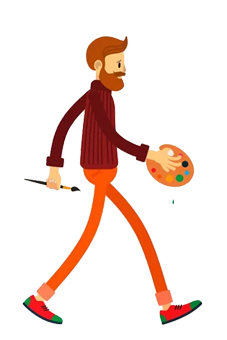
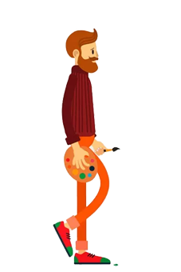
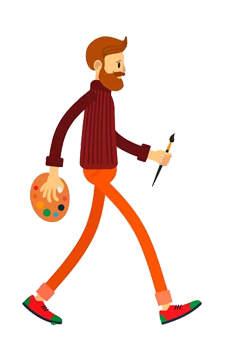

Задание 3
Flexbox-ролик
Выполнил Силуянов Никита, вариант 1. Наведите мышь на блок и звезду, затем нажмите на композицию.




Управление
- В обычном состоянии художник стоит в кадре.
- При наведении он идёт, появляется надпись и звезда.
- При наведении на звезду она движется по траектории.
- После нажатия появляется кисть и новая фраза.